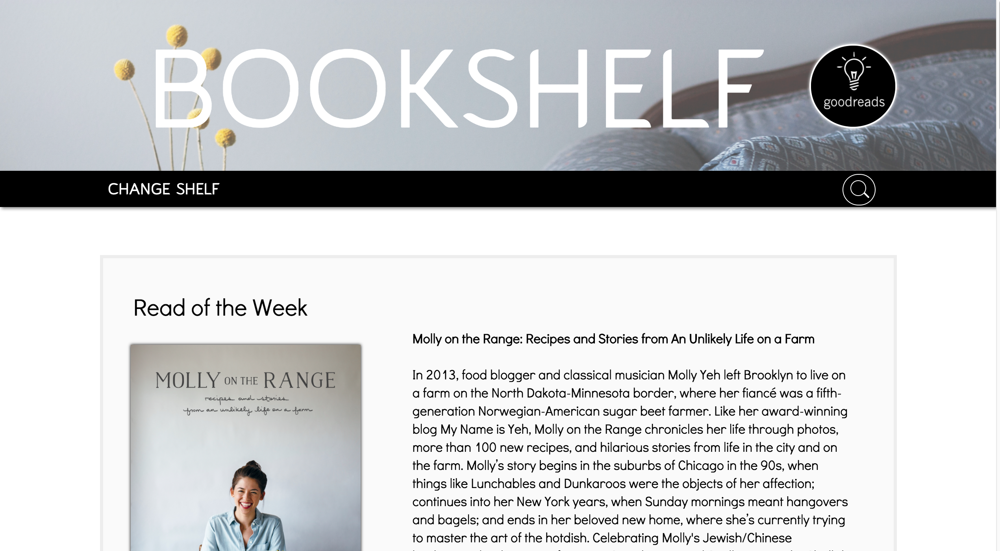
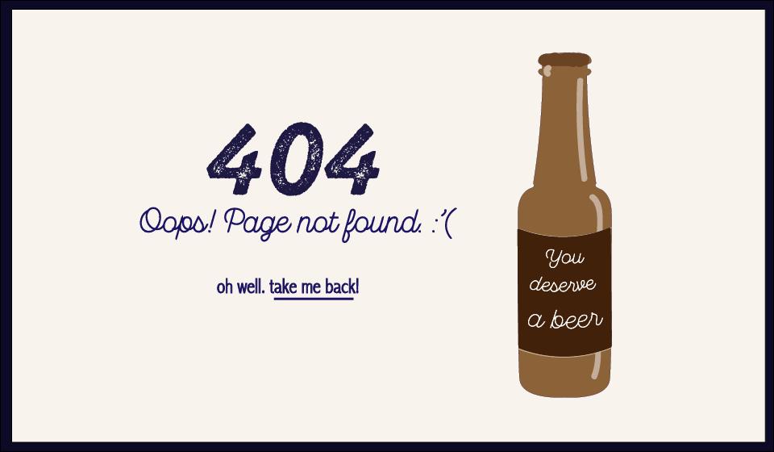

I’m a policy researcher
turned designer/developer
Research is my foundation;
clean, beautiful interfaces are
my bread and butter
Projects

Bookshelf
Bookshelf
A re-design of the goodreads
bookshelf page

Branchless Bank
An flow design for a playful,
fictional online banking app

Detail-Oriented